做了什么
把旧的 12-item color+noun task 改造成 object-familiarity evaluation：偶数 seed 全 Seen，奇数 seed 全 Unseen，指令仅名词。
RoboTwin-IF · Feature 04 · Engineering report
用同一个“识别并抬起指定名词”行为，比较 raw-task 已见物体与未见物体；当前实现采用两个独立、组内同质的四物体场景。
把旧的 12-item color+noun task 改造成 object-familiarity evaluation：偶数 seed 全 Seen，奇数 seed 全 Unseen，指令仅名词。
从 69 个 raw-task-Unseen categories 静态筛出 14 类/54 variants，逐 exact-variant 真实 probe；不足四类后另做 2 类 manual follow-up。
当前 Unseen pool 是 dumbbell、Apple、wooden mallet、paintbrush。Apple 替换 speaker，并改为 z-up、body-centered top grasp；固定双臂 gate 为 10/12，正常 collection 生成 20/20 完整 episodes。
这是两个独立场景的 scene-level familiarity split。Seen−Unseen 同时包含 target、distractor、geometry 与 clutter 差异，不是 target-only causal gap。
Research contract
研究问题是：native-ft VLA 对 raw tasks 里接触过和从未接触过的物体，执行同一个 pick-by-noun 行为时，性能保持多少？
Raw-task Seen 指 numbered asset category 被 first-commit 8187d5b 的 50 个 native/raw task 文件引用。清点为 51 Seen / 69 Unseen，覆盖 120 categories。
JSON 顶层 seen / unseen 仅切分句式模板，不决定 scene asset。两套概念在代码、日志与报告中分开命名。
IF-Ext 是 eval-only，不生成也不消费 IF-specific finetune data；一个资产在其他 IF task 出现过，仍然是 raw-task Unseen。
Current production design
| Raw seed | Target | Scene | Instruction target | Interpretation |
|---|---|---|---|---|
| even | Seen | 4 Seen nouns | the <noun> | Seen target / all-Seen scene |
| odd | Unseen | 4 Unseen nouns | the <noun> | Unseen target / all-Unseen scene |
四 noun 强制唯一，因此 noun-only 指令足以唯一定位目标。placement 按 footprint 从大到小，pairwise separation 为 radius_a + radius_b + 0.025；production 不使用 probe 的 target-first override。
familiarity = ("seen", "unseen")[seed % 2]
group_index = seed // 2
noun_index = group_index % len(active_pool)
variant_cycle = group_index // len(active_pool)| Raw seed | Object scene | Scheduled target | Exact target variant | pdo_closeout8 |
|---|---|---|---|---|
| 0 | all-Seen | bottle | 001_bottle/base13 | failed |
| 1 | all-Unseen | dumbbell | 052_dumbbell/base0 | episode 0 |
| 2 | all-Seen | cup | 021_cup/base0 | episode 1 |
| 3 | all-Unseen | apple | 035_apple/base1 | episode 2 |
| 4 | all-Seen | shoe | 041_shoe/base8 | episode 3 |
| 5 | all-Unseen | wooden mallet | 084_woodenmallet/base3 | episode 4 |
| 6 | all-Seen | mug | 039_mug/base0 | failed |
| 7 | all-Unseen | paintbrush | 093_brush-pen/base1 | failed |
| 8 | all-Seen | can | 071_can/base2 | episode 5 |
| 9 | all-Unseen | dumbbell | 052_dumbbell/base0 | episode 6 |
| 10 | all-Seen | toy car | 057_toycar/base5 | episode 7 |
pdo_closeout8 是当前锁定 Seen/Unseen exact pools 的正常采集：按 raw seeds 0–10 共尝试 11 次，成功保留 seeds 1、2、3、4、5、8、9、10，失败 seeds 0、6、7 不从 tried denominator 删除。seed 7 对应的 paintbrush target 失败，因此八个 kept outputs 中没有 paintbrush-target episode；seed 9 已按 Unseen 四-noun cycle 回到 dumbbell。
同一个 raw seed 还初始化 scene RNG，因此决定 Seen distractor sampling、actor position/yaw、同 radius placement tie-break，以及 target 最终落在左侧还是右侧；oracle arm 由 settled target 的 x 位置选择，而不是由 seed 奇偶直接指定。相同代码、配置和 assets 下，重复 setup 同一 seed 必须得到相同 scene signature。当前 production 每个 noun 只有一个 exact ID，所以 variant_cycle 不改变实际 model；它只为将来 multi-ID entry 保留完整 noun cycle 后换 ID 的通用语义。
Scene setup 只把当前 target 写成 {A} = "the <noun>"，并根据 target x 位置写入 vestigial arm tag {a}。Instruction JSON 顶层 seen/unseen 只选择语言句式，不选择物体 pool；一个 seed 3 的 all-Unseen Apple scene 可以同时生成 template-Seen 和 template-Unseen 两组说法，它们都指向同一个 Apple。
| Scene axis ↓ / language axis → | Template Seen | Template Unseen |
|---|---|---|
| Object Seen scene | Seen objects + familiar wording | Seen objects + held-out wording |
| Object Unseen scene | Unseen objects + familiar wording | Unseen objects + held-out wording |
S_seen/S_unseen 按 object scene familiarity 分组；如果同时研究 instruction wording generalization，应单独报告上面的 2×2 matrix。否则“没认出 Unseen object”和“没泛化到 Unseen wording”会混成一个变量。
Final production selection
每张卡片代表一个 production noun，并直接显示共享 manifest 当前唯一锁定的 exact model ID；缩略图使用该 exact variant 的真实贴图渲染。
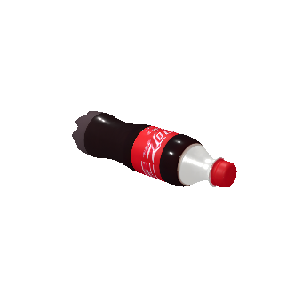
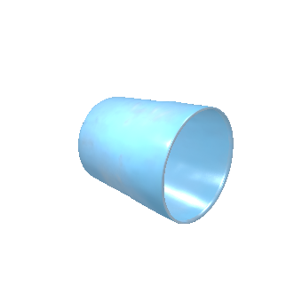
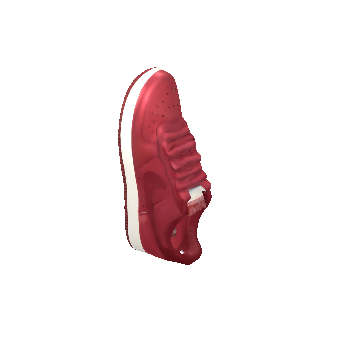
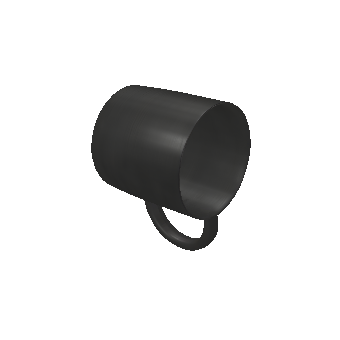
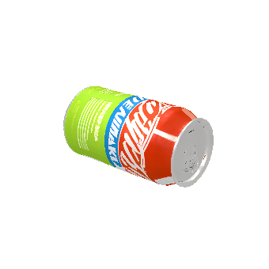
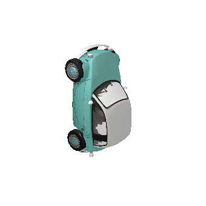
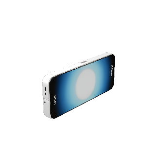
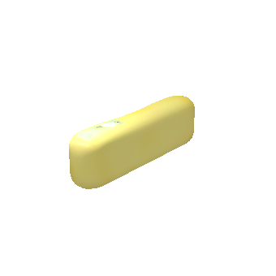
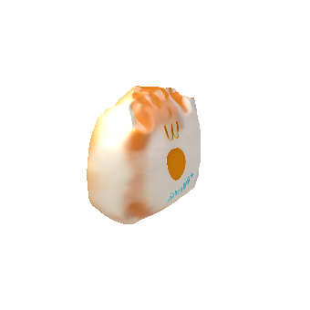
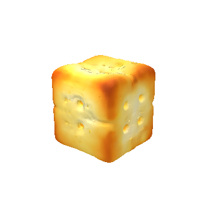
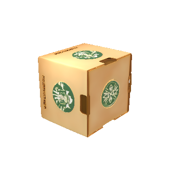
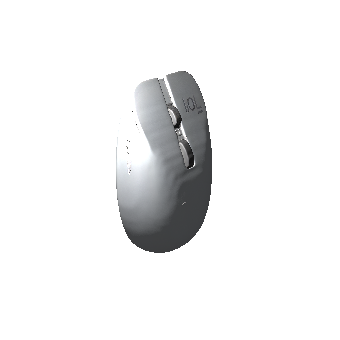
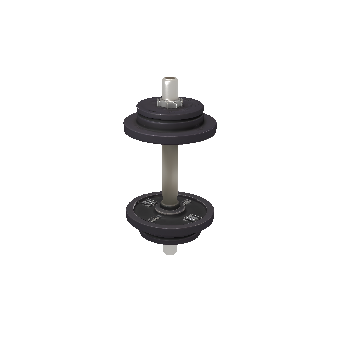
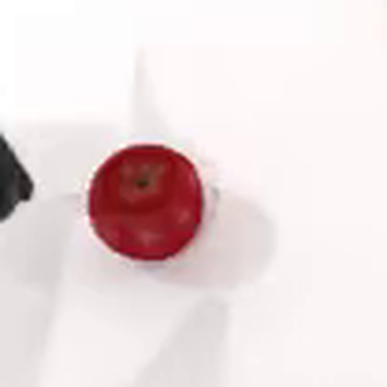
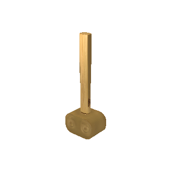
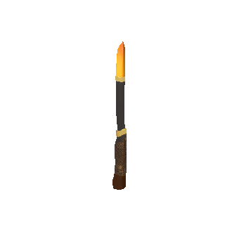
Unseen 四类的 production 资格来自左右臂 confirmation 和 all-Unseen coexistence probe；完整数据在下一节。
Evidence · asset level
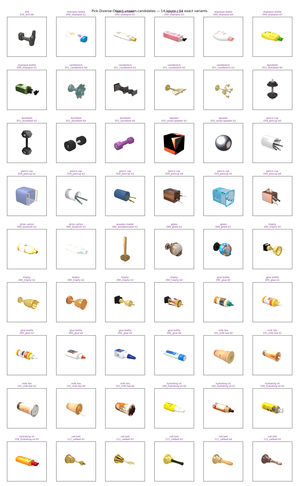
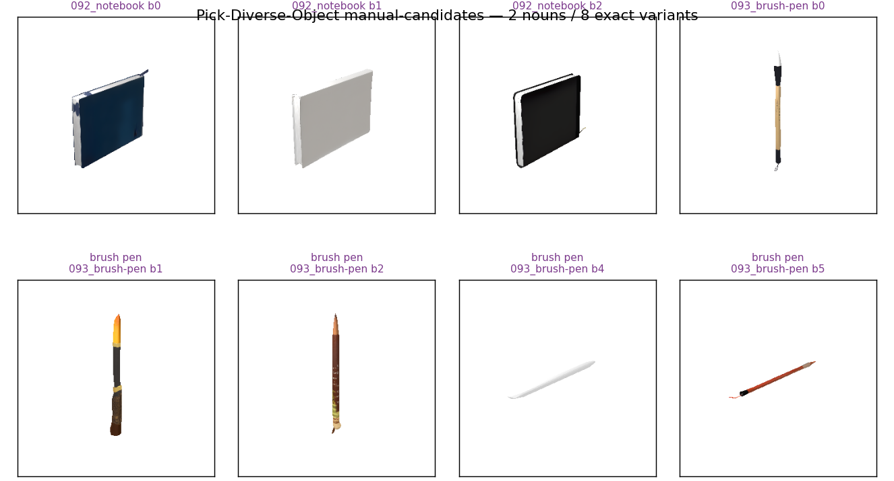
| Noun | Exact asset | Confirmation | Arm evidence | Config |
|---|---|---|---|---|
| dumbbell | 052_dumbbell/base0 | 6/6 · 100% | L 3/3 · R 3/3 | radius .105 |
| apple | 035_apple/base1 | 10/12 · 83.3% | L 5/6 · R 5/6 | z-up · 4 body-centered top contacts · radius .055 |
| wooden mallet | 084_woodenmallet/base3 | 6/6 · 100% | L 3/3 · R 3/3 | radius .100 |
| paintbrush | 093_brush-pen/base1 | 5/6 · 83.3% | L 2/3 · R 3/3 | contact ID 0 · radius .080 |
Selection discipline
Independent confirmation ≥70%；左右臂各至少一次真实成功；能稳定参与最终全-Unseen 四物体 production scene。
69 个 Unseen categories → 14 nouns / 54 exact variants。metadata 只决定“值得 probe”，不决定“可用于 production”。
所有 54 variants 至少做一次真实 exact trial；quick success 者再测 opposite arm。
Trophy base3 从 quick 3/4 降到 confirmation 0/4；glue、candlestick、hand bell、drink bottle 的调参也未跨过门槛。
Paintbrush base1 使用已有 contact pose 的 ID 0，confirmation 5/6，左右臂均成功；没有改写 third-party metadata。
历史 speaker pool 在 odd seeds 1–15 达到 8/8 setup、8/8 settle、7/8 oracle；保留 JSON 用于审计首次四物体 lock，但 runtime 不再保留该旧 pool。
当前 Apple 不是 metadata 自动晋级：经明确 replacement decision、z-up/top-contact redesign、双臂 10/12 gate 和 normal 20-success collection 后进入 production。
关键教训：contact pose 可规划不等于执行可靠。hand bell 与 drink bottle 都曾在 isolated planning 或 quick trials 中显得可行，但 fresh confirmation 回归；这正是不能让 metadata 自动落入 production pool 的原因。
Evidence · final production rollout
当前 production Apple 使用 035_apple/base1、z-pos-up 和四个 body-centered top-down contacts。源 JSON 与历史 native-contact experiments 均未修改。
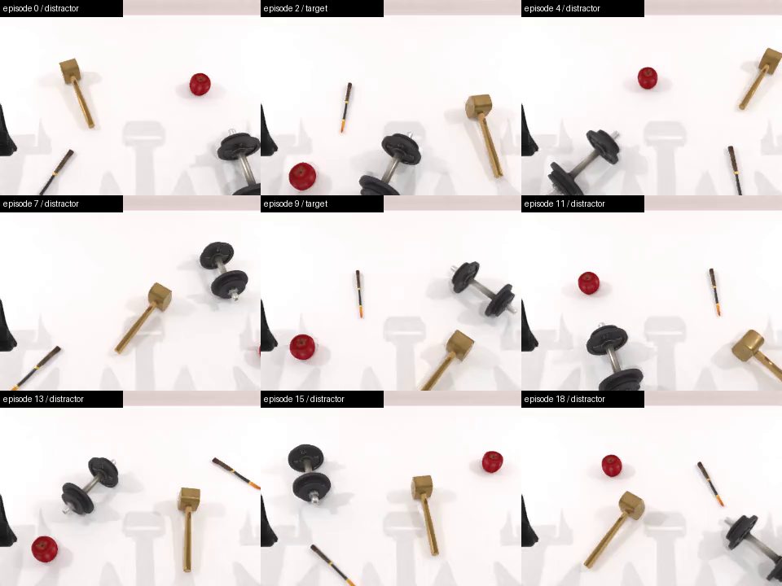
| Collection item | Result | Detail |
|---|---|---|
| Raw seed search | 20 / 23 kept | accepted 1,2,3,4,5,6,8,9,10,11,12,13,14,15,16,17,18,20,21,22; failed 0,7,19 |
| Successful composition | 11 Seen / 9 Unseen | Unseen Apple pool 与当前相同；11 个 Seen episodes 先于后续 12/12 exact-ID 重选 |
| Video/HDF5 integrity | 20 / 20 | all MP4s decode as H.264 320×240; all HDF5 files open |
| Approach diagnostic | 20 / 20 vertical | every recorded abs(approach_axis_z) ≥ 0.90 |
20-success run 验证当时的 parity scheduling 与 native data pipeline；其 Unseen pool 与当前 Apple production 一致，所以两段 Apple target 证据仍适用。之后 Seen 侧重选为 12/12 exact IDs，旧 run 的 11 个 Seen episodes 不验证这些新 IDs。右臂 Apple 能力另来自固定 gate 的 5/6。
Implementation
纯数据 pool module 不 import SAPIEN，static tests 和 reporter 可直接复用生产表。每个 entry 只保存 exact IDs、rest pose、rotation、grasp strategy、generic kwargs 与 placement radius；现役 schema 不含 per-arm kwargs、generic actor-config 或 scale override。
Apple 是唯一的 production-only actor-config specialization：actor 创建后，以 native metadata 的 deep copy 构造四个 body-centered vertical contacts；共享 grasp_actor() 仍负责按当前 arm 选择可达 wrist roll。approach_axis_z 只记录方向诊断，不改变 lifted-and-held success 定义。已淘汰候选的 one-off manifests 与 stability/policy interfaces 已在 closeout 删除。
familiarity = ("seen", "unseen")[seed % 2]
group_index = seed // 2
self.info["info"] = {
"{A}": f"the {self.target_noun}",
"{a}": str(arm_tag),
}check_success() 只在 named target 相对 settled origin 上升超过 0.02 m 且仍与夹爪接触时返回 True。抬起 distractor、只移动 target、碰撞导致未持握抬升都必须为 False。
Verification matrix
| Layer | Result | 证明什么 |
|---|---|---|
| Pool / taxonomy / schedule | 33/33 | 51/69 taxonomy、14/54 shortlist、12/12 Seen lock、final four、seed cycles、retained schema 与 top-contact geometry/isolation |
| Probe control logic | 6/6 | generic settle fail-closed qualification、video naming 与 overwrite protection |
| Instruction contract | 11/11 | Noun-only placeholders；template split 与 familiarity 不混用 |
| Real-SAPIEN wiring | 54/54 | Seeds 0–7 parity、4 unique nouns、radius-first、determinism、Apple target/distractor top config 与 source JSON immutability |
| Apple fixed physical gate | 10/12 | left 5/6、right 5/6；所有成功 grasp 的 approach axis 均 vertical；失败不换 seed |
| Layer-B semantics | 22/22 | Seen 12 + current Unseen 4 positives；untouched/wrong-object/teleported-not-held negatives |
| Reporter synthetic math | 10/10 | balanced、gap、retention、group composition 与 exact-target mapping regression |
| Normal native collection | 20/20 | 20 trajectories/HDF5/MP4/instructions/scene-info；current Unseen Apple pool，Seen exact-ID 重选前 |
| Current-pool closeout collection | 8 kept / 11 tried | pdo_closeout8：current Seen + Unseen exact pools；4 Seen / 4 Unseen kept；failed raw seeds 0、6、7；8/8 MP4 full-decode 与 HDF5 open |
| Apple video review | 2/2 target | 16-frame review confirms z-up start、top approach、body grasp、lift and final hold；9/9 Unseen initials upright |
| Historical first-lock sweep | 7/8 oracle | Retained JSON records 8/8 setup/settle for the former speaker pool；runtime manifest 已删除，不作为当前 Apple pool claim |
| Operate-Tabletop shared-helper regression | 本轮未执行 | 当前正式 bridge 不维护该 task；import 前置停止，未把历史结果冒充当前 run |
| VLA evaluation | 未运行 | 本 report 不含任何 policy 的 S_seen/S_unseen |
Reporter 的 synthetic fixture 是 aggregation regression，不是实验结果。真正评测时应同时给出 S_seen、S_unseen、balanced average、absolute gap、retention、group micro、per-noun macro、exact variants 与 tried/kept composition。
Interpretation boundary
Seen 与 Unseen scene 的 target、distractors、geometry 和 clutter composition 都不同；差值只能称为 scene-level object-familiarity gap。
最终 pool 是经过物理可执行性筛选的 4 类 survivors，而且每个 Unseen episode 都包含这四类；必须同时报告 per-noun macro。
10/12 physical gate 与 20-success collection 都由 scripted oracle 执行；尚未运行 CogACT/X-VLA 等 VLA inference。
Noun-only、51/69 taxonomy、task-local contacts、placement radii 与 0.02 m threshold 都是本项目设计，不是论文公开真值。
native collection 会继续搜索 raw seeds 直到收满 20 个成功 episode；因此 20/20 是 kept outputs 的完整性，不应当报告成 raw-seed oracle success rate。tried composition 是 20/23。
自然 collection 中两次 Apple target 都由左臂执行；右臂 5/6 来自另外六个冻结场景，不能把左臂视频当作双臂动作证据。
Historical baseline · not current contract
论文 §6.2.1 可确认的是“12 everyday items 抽 4 个，以 color+noun 点名目标”。本项目在 2026-08-21~24 实现并验证过 12 nouns / 16 variants baseline。当前版本为了 object familiarity 研究问题移除了颜色；下面视频只证明旧 baseline 的 color grounding 与 oracle，不证明新 Seen/Unseen scenes。
Reproduction
# Bridge local task files into the RoboTwin submodule
bash scripts/bridge_tasks.sh
bash scripts/bridge_tasks.sh --check
# Simulator-free contracts
python tests/pick_diverse_object/test_pool.py
python tests/pick_diverse_object/test_probe_logic.py
python tests/pick_diverse_object/test_instructions.py
python tests/pick_diverse_object/test_reporter.py
# Real SAPIEN wiring, fixed Apple gate, and success semantics
conda run --no-capture-output -n RoboTwin \
python tests/pick_diverse_object/test_wiring.py
conda run --no-capture-output -n RoboTwin \
python tests/pick_diverse_object/test_apple_top_grasp.py
conda run --no-capture-output -n RoboTwin \
python tests/pick_diverse_object/test_check_success.py
# Exact native collection invocation used for the archived 20-success run.
# pdo_apple20/ already exists: use a copied YAML with a fresh config name
# for a new run rather than overwriting this evidence.
(cd third_party/robotwin && \
conda run --no-capture-output -n RoboTwin \
bash collect_data.sh pick_diverse_object pdo_apple20 0)
# Report a policy evaluation log (not yet run in this report)
python tools/report_pick_diverse_object.py --eval-log /path/to/eval.log深读材料：understanding.md（问题与证据边界）、selection-process.md（完整物体挑选过程）、architecture.md（数据流与模块）、decisions.md（方案取舍）、object-familiarity.md（probe ledger）。主仓库规范在 docs/features/04-Pick-Diverse-Object.md。
{kind=link}
{kind=link}